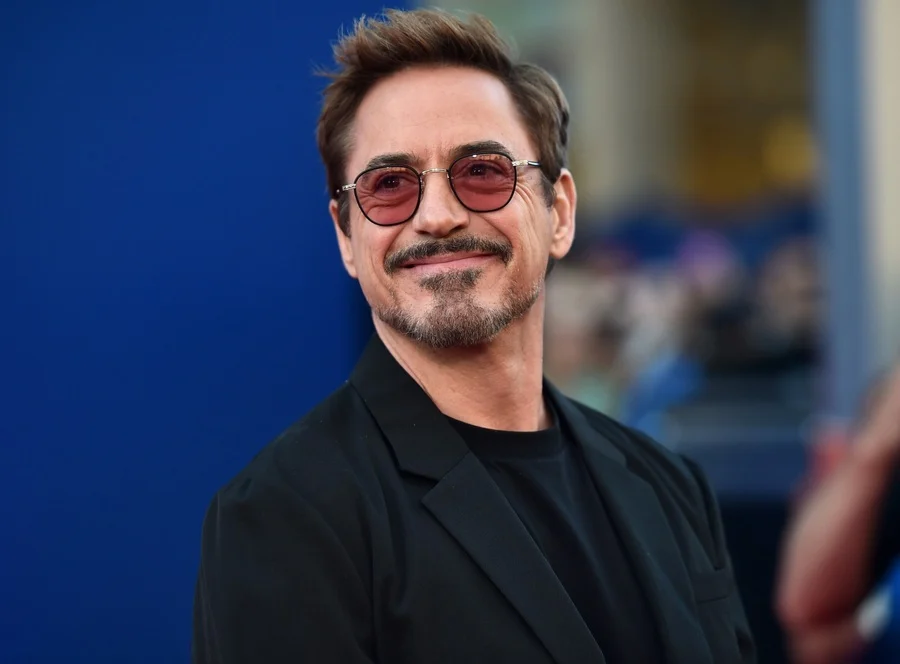

Robert Downy Jr.
Biography
Downey was born in Manhattan, New York City, the younger of two children. His father, Robert Downey Sr., was an actor and filmmaker, while his mother, Elsie Ann (née Ford), was an actress who appeared in Downey Sr.'s films.[5] Downey's father was of half Lithuanian Jewish, one-quarter Hungarian Jewish, and one-quarter Irish descent,[6][7][8][9] while Downey's mother had Scottish, German, and Swiss ancestry.[10][11][12] Robert's original family name was Elias which was changed by his father to enlist in the Army.[13] Downey and his older sister Allyson grew up in Greenwich Village.[14] As a child, Downey was "surrounded by drugs." His father, a drug addict, allowed Downey to use marijuana at age six, an incident which his father later said he regretted.[14] Downey later stated that drug use became an emotional bond between him and his father: "When my dad and I would do drugs together, it was like him trying to express his love for me in the only way he knew how." Eventually, Downey began spending every night abusing alcohol and "making a thousand phone calls in pursuit of drugs".[15][16] During his childhood, Downey had minor roles in his father's films. He made his acting debut at the age of five, playing a sick puppy in the absurdist comedy Pound (1970), and then at seven appeared in the surrealist Western Greaser's Palace (1972).[11] At the age of 10, he was living in England and studied classical ballet as part of a larger curriculum.[17][18] He attended the Stagedoor Manor Performing Arts Training Center in upstate New York as a teenager. When his parents divorced in 1978, Downey moved to California with his father, but in 1982, he dropped out of Santa Monica High School, and moved back to New York to pursue an acting career full-time.[19] Downey and Kiefer Sutherland, who shared the screen in the 1988 drama 1969, were roommates for three years when he first moved to Hollywood to pursue his career in acting.[20]
Career
Downey began building upon theater roles, including in the short-lived off-Broadway musical American Passion at the Joyce Theater in 1983, produced by Norman Lear. In 1985, he was part of the new, younger cast hired for Saturday Night Live, but following a year of poor ratings and criticism of the new cast's comedic talents, he and most of the new crew were dropped and replaced.[19] Rolling Stone magazine named Downey the worst SNL cast member in its entire run, stating that the "Downey Fail sums up everything that makes SNL great."[21] That same year, Downey had a dramatic acting breakthrough when he played James Spader's character's sidekick in Tuff Turf and then a bully in John Hughes's Weird Science. He was considered for the role of Duckie in John Hughes's film Pretty in Pink (1986),[22] but his first lead role was with Molly Ringwald in The Pick-up Artist (1987). Because of these and other coming-of-age films Downey did during the 1980s, he is sometimes named as a member of the Brat Pack.[19][23] In 1987, Downey played Julian Wells, a drug-addicted rich boy whose life rapidly spirals out of his control, in the film version of the Bret Easton Ellis novel Less Than Zero. His performance, described by Janet Maslin in The New York Times as "desperately moving",[24] was widely praised, though Downey has said that for him "the role was like the ghost of Christmas Future" since his drug habit resulted in his becoming an "exaggeration of the character" in real life.[25] Zero drove Downey into films with bigger budgets and names, such as Chances Are (1989) with Cybill Shepherd and Ryan O'Neal, Air America (1990) with Mel Gibson, and Soapdish (1991) with Sally Field, Kevin Kline, and Whoopi Goldberg.[26][27][28] In 1992, he starred as Charlie Chaplin in Chaplin, a role for which he prepared extensively, learning how to play the violin as well as tennis left-handed. He had a personal coach in order to help him imitate Chaplin's posture, and a way of carrying himself.[29] The role garnered Downey an Academy Award nomination for Best Actor at the Academy Awards 65th ceremony, losing to Al Pacino in Scent of a Woman.[30] In 1993, he appeared in the films Heart and Souls with Alfre Woodard and Kyra Sedgwick and Short Cuts with Matthew Modine and Julianne Moore, along with a documentary that he wrote about the 1992 presidential campaigns titled The Last Party (1993).[31][32][33] He starred in the 1994 films, Only You with Marisa Tomei, and Natural Born Killers with Woody Harrelson.[34][35] He then subsequently appeared in Restoration (1995), Richard III (1995), Home for the Holidays (1995), Two Girls and a Guy (1997),[36] as Special Agent John Royce in U.S. Marshals (1998), and in Black and White (1999).[37][38][39][40] From 1996 through 2001, Downey was arrested numerous times on charges related to drugs including cocaine, heroin, and marijuana.[41] He went through drug treatment programs unsuccessfully, explaining in 1999 to a judge: "It's like I have a shotgun in my mouth, and I've got my finger on the trigger, and I like the taste of the gun metal." He said he had been addicted to drugs since the age of eight, due to the fact that his father, also an addict, had been giving them to him.[42] In April 1996, Downey was arrested for possession of heroin, cocaine, and an unloaded .357 Magnum handgun while he was speeding down Sunset Boulevard. A month later, while on parole, he trespassed into a neighbor's home while under the influence of a controlled substance, and fell asleep in one of the beds.[43][44] He received three years' probation and was ordered to undergo compulsory drug testing. In 1997, he missed one of the court-ordered drug tests and had to spend six months in the Los Angeles County jail.[45] After Downey missed another required drug test in 1999, he was arrested again. Despite Downey's lawyer, Robert Shapiro, assembling the same team of lawyers that had successfully defended O. J. Simpson during his criminal trial for murder,[42] Downey was sentenced to a three-year prison term at the California Substance Abuse Treatment Facility and State Prison in Corcoran, California. At the time of the arrest, all of Downey's film projects had wrapped and were close to release. He had been hired to provide the voice of the devil on the NBC animated television series God, the Devil and Bob, but was fired when he failed to attend rehearsals.[46][47] After spending nearly a year in the California Substance Abuse Treatment Facility and State Prison, Downey, on condition of posting a $5,000 bail, was unexpectedly freed when a judge ruled that his collective time in incarceration facilities (from the initial 1996 arrests) had qualified him for early release.[14] A week after his 2000 release, Downey joined the cast of the hit television series Ally McBeal, playing a new love interest.[48] He was nominated for the Primetime Emmy Award for Outstanding Supporting Actor in a Comedy Series and won the Golden Globe Award for Best Supporting Actor – Series, Miniseries or Television Film.[49][50] He also appeared as a writer and singer on Vonda Shepard's Ally McBeal: For Once in My Life album, and sang with Sting a duet of "Every Breath You Take" in an episode of the series. Despite the apparent success, Downey claimed that his performance on the series was overrated and said, "It was my lowest point in terms of addictions. At that stage, I didn't give a fuck whether I ever acted again."[25] In January 2001, Downey was scheduled to play the role of Hamlet in a Los Angeles stage production directed by Mel Gibson.[51] Before the end of his first season on Ally McBeal, over the Thanksgiving 2000 holiday, Downey was arrested when his room at Merv Griffin's Hotel and Givenchy Spa in Palm Springs, California, was searched by the police, who were responding to an anonymous 911 call. Downey was under the influence of a controlled substance and in possession of cocaine and Valium.[52][53] Despite the fact that, if convicted, he would have faced a prison sentence of up to four years and eight months, he signed on to appear in at least eight more Ally McBeal episodes.[54] In April 2001, while Downey was on parole, a Los Angeles police officer found him wandering barefooted in Culver City. He was arrested for suspicion of being under the influence of drugs, but was released a few hours later,[55] even though tests showed he had cocaine in his system.[56] After this last arrest, Ally McBeal executives ordered last-minute rewrites and reshoots and fired Downey, despite the fact that Downey's character had resuscitated Ally McBeal's ratings.[57] The Culver City arrest also cost him a role in the high-profile film America's Sweethearts,[56] and the subsequent incarceration prompted Gibson to cancel his Hamlet production. In July 2001, Downey pleaded no contest to the Palm Springs charges, avoiding jail time. Instead, he was sent into drug rehabilitation and received three years of probation, benefiting from California Proposition 36, which had been passed the year before with the aim of helping nonviolent drug offenders overcome their addictions instead of sending them to jail.[14][58] The book Conversations with Woody Allen reports that director Woody Allen wanted to cast Downey and Winona Ryder in his film Melinda and Melinda in 2003, but was unable to do so, because he could not get insurance on them, stating, "We couldn't get bonded. The completion bonding companies would not bond the picture unless we could insure them. We were heartbroken because I had worked with Winona before [on Celebrity] and thought she was perfect for this and wanted to work with her again. And I had always wanted to work with Bob Downey and always thought he was a huge talent."[59] In a December 18, 2000, article for People magazine entitled "Bad to Worse", Downey's stepmother Rosemary told author Alex Tresnlowski that Downey had been diagnosed with bipolar disorder "a few years ago" and added that this was "the reason he has a hard time staying sober. What hasn't been tried is medication and intensive psychotherapy".[60] In the same article, Dr. Manijeh Nikakhtar, a Los Angeles psychiatrist and co-author of Addiction or Self-Medication: The Truth, claimed she received a letter from Downey in 1999, during his time at Corcoran II, asking for advice on his condition. She discovered that "no one had done a complete [psychiatric] evaluation [on him] ... I asked him flat out if he thought he was bipolar, and he said, 'Oh yeah. There are times I spend a lot of money and I'm hyperactive, and there are other times I'm down.'"[60] In an article for the March 2007 issue of Esquire, Downey stated that he wanted to address "this whole thing about the bipolar" after receiving a phone call from "the Bipolar Association" asking him about being bipolar. When Downey denied he had ever said he was bipolar, the caller quoted the People article, to which Downey replied, "'No! Dr. Malibusian said [I said I was bipolar] ... ', and they go, 'Well, it's been written, so we're going to quote it.'"[61] Downey flatly denied being "depressed or manic" and that previous attempts to diagnose him with any kind of psychiatric or mood disorder have always been skewed because "the guy I was seeing didn't know I was smokin' crack in his bathroom. You can't make a diagnosis until somebody's sober."[61] After five years of substance abuse, arrests, rehab, and relapse, Downey was ready to work toward a full recovery from drugs and return to his career. In discussing his failed attempts to control his addictive behavior in the past, Downey told Oprah Winfrey in November 2004 that "when someone says, 'I really wonder if maybe I should go to rehab?' Well, uh, you're a wreck, you just lost your job, and your wife left you. Uh, you might want to give it a shot."[62] He added that after his last arrest in April 2001, when he knew he would likely be facing another stint in prison or another form of incarceration such as court-ordered rehab, "I said, 'You know what? I don't think I can continue doing this.' And I reached out for help, and I ran with it. You can reach out for help in kind of a half-assed way and you'll get it and you won't take advantage of it. It's not that difficult to overcome these seemingly ghastly problems ... what's hard is to decide to do it."[62] Downey got his first post-rehabilitation acting job in August 2001, lip-syncing in the video for Elton John's single "I Want Love".[63] Video director Sam Taylor-Wood shot 16 takes of the video and used the last one because, according to John, Downey looked completely relaxed and "The way he underplays it is fantastic".[64] Downey was able to return to the big screen after Mel Gibson, who had been a close friend to Downey since both had co-starred in Air America, paid Downey's insurance bond for the 2003 film The Singing Detective (directed by his Back to School co-star Keith Gordon).[4] Gibson's gamble paved the way for Downey's comeback and Downey returned to mainstream films in the mid-2000s with Gothika, for which producer Joel Silver withheld 40% of his salary until after production wrapped as insurance against his addictive behavior. Similar clauses have become standard in his contracts since.[65] Silver, who was getting closer to Downey as he dated his assistant Susan Levin, also got the actor the leading role in the comedy thriller Kiss Kiss Bang Bang, the directorial debut of screenwriter Shane Black.[66] After Gothika, Downey was cast in a number of leading and supporting roles, including well-received work in a number of semi-independent films: A Guide to Recognizing Your Saints, Good Night, and Good Luck, Richard Linklater's dystopian, rotoscoped A Scanner Darkly (in which Downey plays the role of a drug addict), and Steven Shainberg's fictional biographical film of Diane Arbus, Fur, where Downey's character represented the two biggest influences on Arbus's professional life, Lisette Model and Marvin Israel.[67] Downey also received great notice for his roles in more mainstream fare such as Kiss Kiss Bang Bang and Disney's poorly received The Shaggy Dog.[68] On November 23, 2004, Downey released his debut musical album, The Futurist, on Sony Classical, for which he designed the cover art and designed the track listing label on the CD with his son Indio.[69] The album received mixed reviews,[70][71] but Downey stated in 2006 that he probably will not do another album, as he felt that the energy he put into doing the album was not compensated.[72] In 2006, Downey returned to television when he did voice acting on Family Guy in the episode "The Fat Guy Strangler". Downey had previously telephoned the show's production staff and asked if he could produce or assist in an episode creation, as his son Indio is a fan of the show. The producers of the show accepted the offer and created the character of Patrick Pewterschmidt, Lois Griffin's long lost, mentally disturbed brother, for Downey.[73] Downey signed on with publishers HarperCollins to write a memoir, which in 2006, was already being billed as a "candid look at the highs and lows of his life and career". In 2008, however, Downey returned his advance to the publishers, and canceled the book without further comment.[74] In 2007, Downey appeared in David Fincher's mystery thriller Zodiac, which was based on a true story. He played the role of San Francisco Chronicle journalist Paul Avery, who was reporting the Zodiac Killer case. With all of the critical success Downey had experienced throughout his career, he had not appeared in a "blockbuster" film. That changed in 2008 when Downey starred in two critically and commercially successful films, Iron Man and Tropic Thunder. In the article Ben Stiller wrote for Downey's entry in the 2008 edition of The Time 100, he offered an observation on Downey's commercially successful summer at the box office: Yes, Downey is Iron Man, but he really is Actor Man ... In the realm where box office is irrelevant and talent is king, the realm that actually means something, he has always ruled, and finally this summer he gets to have his cake and let us eat him up all the way to the multiplex, where his mastery is in full effect. — Ben Stiller, The 2008 Time 100, entry No. 60, "Robert Downey Jr."[76] In 2007, Downey was cast as the title character in the film Iron Man,[77] with director Jon Favreau explaining the choice by stating: "Downey wasn't the most obvious choice, but he understood what makes the character tick. He found a lot of his own life experience in 'Tony Stark'."[78] Favreau insisted on having Downey as he repeatedly claimed that Downey would be to Iron Man what Johnny Depp is to the Pirates of the Caribbean series: a lead actor who could both elevate the quality of the film and increase the public's interest in it.[43][79][80][81] For the role, Downey had to gain more than 20 pounds (9 kilograms) of muscle in five months to look like he "had the power to forge iron".[82] Iron Man was globally released between April 30 and May 3, 2008, grossing over $585 million worldwide[83] and receiving rave reviews which cited Downey's performance as a highlight of the film.[84][85][86] By October 2008, Downey had agreed to appear as Iron Man in two Iron Man sequels, as part of the Iron Man franchise, as well as The Avengers, featuring the superhero team that Stark joins, based on Marvel's comic book series The Avengers.[87] He first reprised the role in a small appearance as Iron Man's alter ego Tony Stark in the 2008 film The Incredible Hulk, as a part of Marvel Studios' depicting the same Marvel Universe on film by providing continuity among the movies.[88] After Iron Man, Downey appeared alongside Ben Stiller and Jack Black in the Stiller-directed Tropic Thunder. The three actors play a Hollywood archetype – with Downey playing self-absorbed multi-Oscar-winning Australian method actor Kirk Lazarus – as they star in an extremely expensive Vietnam-era film called Tropic Thunder. Lazarus undergoes a "controversial skin pigmentation procedure" in order to take on the role of African-American platoon sergeant Lincoln Osiris, which required Downey to wear dark makeup and a wig. Both Stiller and Downey feared Downey's portrayal of the character could become controversial: Stiller says that he and Downey always stayed focused on the fact that they were skewering insufferable actors, not African Americans. "I was trying to push it as far as you can within reality", Stiller explains. "I had no idea how people would respond to it". Stiller screened a rough cut of the film [in March 2008] and it scored high with African Americans. He was relieved at the reaction. "It seems people really embrace it", he said.[89] When asked by Harry Smith on CBS's The Early Show who his model was for Lazarus, Downey laughed before responding, "Sadly, my sorry-ass self."[90] Released in the United States on August 13, 2008, Tropic Thunder received good reviews with 83% of reviews positive and an average normalized score of 71, according to the review aggregator websites Rotten Tomatoes and Metacritic, respectively.[91][92] It earned US$26 million in its North American opening weekend and retained the number one position for its first three weekends of release. The film grossed $180 million in theaters before its release on home video on November 18, 2008. Downey was nominated for the Academy Award for Best Supporting Actor for his portrayal of Lazarus.[93] Opening in late April 2009 was a film Downey finished in mid-2008, The Soloist. The film was delayed from a November 2008 release by Paramount Pictures due to the studio's tight end-of-year release schedule.[94] Critics who had seen the film in 2008 were mentioning it as a possible Academy Award candidate.[95] Downey picked up an Academy Award nomination for the 2008 release year for his role in Tropic Thunder.[96] The first role Downey accepted after Iron Man was the title character in Guy Ritchie's Sherlock Holmes. Warner Bros. released it on December 25, 2009.[97] The film set several box office records in the United States for a Christmas Day release, beating the previous record-holder, 2008's Marley & Me, by nearly $10M, and finished second to Avatar in a record-setting Christmas weekend box office. Sherlock Holmes ended up being the 8th highest-grossing film of 2009.[98][99] When Downey won the Golden Globe for Best Actor in a Motion Picture Musical or Comedy from the Hollywood Foreign Press Association for his role as Sherlock Holmes, he noted in his acceptance speech that he had prepared no remarks because "Susan Downey (his wife and Sherlock Holmes producer) told me that Matt Damon (nominated for his role in The Informant!) was going to win so don't bother preparing a speech".[100] Downey returned as Tony Stark in the first of two planned sequels to Iron Man, Iron Man 2, which released in May 2010. Iron Man 2 grossed over $623M worldwide, becoming the 7th highest-grossing film of 2010.[101] Downey's other commercial film release of 2010 was the comedy road film, Due Date. The movie, co-starring Zach Galifianakis, was released in November 2010[102] and grossed over $211M worldwide, making it the 36th highest-grossing movie of 2010.[103] Downey's sole 2011 film credit was the sequel to the 2009 version of Sherlock Holmes, Sherlock Holmes: A Game of Shadows, which opened worldwide on December 16, 2011. In 2012, Downey reprised the role of Tony Stark in The Avengers. The film received positive reviews[105] and was highly successful at the box office, becoming the third highest-grossing film of all time both in the United States and worldwide.[106] His film, the David Dobkin-directed dramedy The Judge,[107] a project co-produced by his production company Team Downey, was the opening film at the Toronto International Film Festival in 2014.[108] Downey played Tony Stark again in Iron Man 3 (2013),[109] Avengers: Age of Ultron (2015), Captain America: Civil War (2016), Spider-Man: Homecoming (2017),[110] Avengers: Infinity War (2018), Avengers: Endgame (2019)[110] and three of his scenes from the first Avengers and Avengers: Endgame also appear in the first episode of Loki.[111] Downey hosted The Age of A.I., a YouTube documentary series released in 2019.[112] In 2020, he starred in Dolittle, playing the titular character, depicted in the film as a 19th-century Welsh veterinarian who can communicate with animals. This was the second film from Team Downey. It was a box office disappointment, and received negative reviews from critics, who called it "too long [and] lifeless."
Family
Downey started dating actress Sarah Jessica Parker in 1984 after meeting her on the set of Firstborn. The couple later separated in 1991 due to his drug addiction.[124] He married actress and singer Deborah Falconer on May 29, 1992, after a 42-day courtship.[125] Their son, Indio Falconer Downey, was born in September 1993.[126] The strain on their marriage from Downey's repeated trips to rehab and jail finally reached a breaking point; in 2001, in the midst of Downey's last arrest and sentencing to an extended stay in rehab, Falconer left Downey and took their son with her.[125] Downey and Falconer finalized their divorce on April 26, 2004. In 2003, Downey met producer Susan Downey (née Levin), an Executive Vice President of Production at Joel Silver's film company, Silver Pictures on the set of Gothika.[4] Though Susan twice turned down his amorous advances, she and Downey did quietly strike up a romance during production.[127] Despite Susan's worries that the romance would not last after the completion of shooting because "he's an actor; I have a real job",[127] the couple's relationship continued after production wrapped on Gothika, and Downey proposed to Susan on the night before her thirtieth birthday.[127] In August 2005, the couple were married, in a Jewish ceremony, at Amagansett, New York.[128][129] A tattoo on one of his biceps reads "Suzie Q" in tribute to her.[130] The Downeys’ first child, a son named Exton Elias, was born in February 2012,[131] and their second, a daughter named Avri Roel, was born in November 2014.[132][133][134] Downey has been a close friend of Mel Gibson since they starred in Air America. Downey defended Gibson during the controversy surrounding The Passion of the Christ, and said "nobody's perfect" in reference to Gibson's DUI.[135] Gibson said of Downey: "He was one of the first people to call and offer the hand of friendship. He just said, 'Hey, welcome to the club. Let's go see what we can do to work on ourselves.'"[136] In October 2011, Downey was being honored at the 25th American Cinematheque Awards; Downey chose Gibson to present him with his award for his life's work and used his air time to say a few kind words about Gibson and explain why he chose him to present the award.[137]
Movies List
Top 10 Robert Downey Jr. movies
- Sherlock Holmes (2009)
- Zodiac (2007)
- Chaplin (1992)
- Avengers: Infinity War (2018)
- Avengers: Endgame (2019)
- Captain America: Civil War (2016)
- Good Night, and Good Luck. (2005)
- The Avengers (2012)
- Tropic Thunder (2008)
- Iron Man (2008)
For more information, please visit wikipedia
| More Information | Links |
|---|---|
| References | Click Here for References |
| IMDB Info | Click Here for IMDB info |